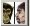
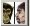
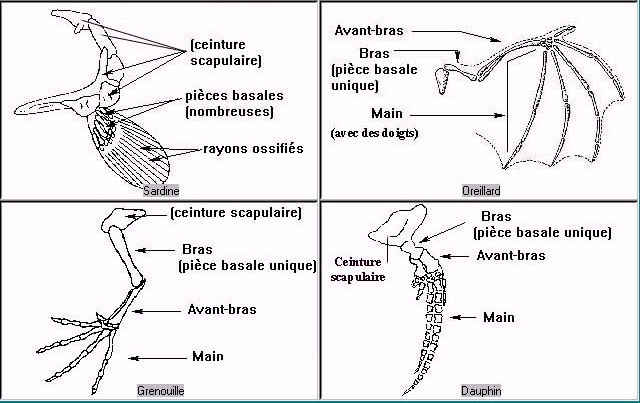

Comparer
ComparerActivité accessible à tout moment à partir du menu général ou de l'icône .
- Choisir l'activité Comparer,
Comparer
Activité
accessible à tout moment à partir du menu
général ou de l'icône .
- Choisir l'activité Comparer,
- Sélectionner les taxons un par un dans le bandeau de défilement des taxons, ou en sélectionner plusieurs simultanément - maximum 4 - à partir de la planche des espèces,
- Les taxons ajoutés ensuite se placeront par défaut en remplacement du premier, puis du deuxième,...
- Pour supprimer un taxon, cliquer sur son image,
- Choisir la donnée à comparer dans la liste des données.
- Eventuellement, choisir une nouvelle donnée pour la
comparer chez les espèces affichées.
Comparer des données
morphologiques

Comparer des données anatomiques
